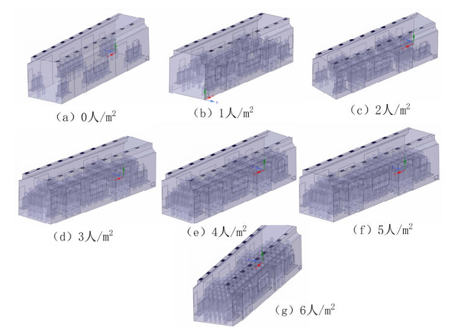
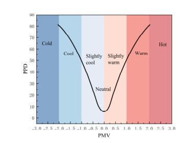
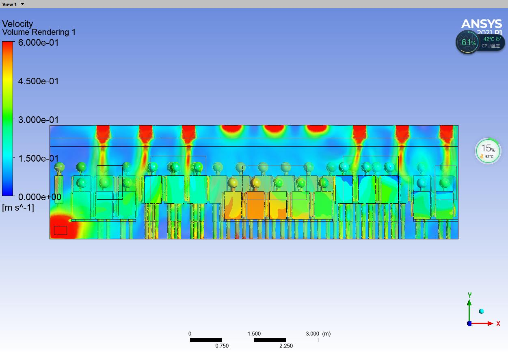

PERSONAL RESUME / PORTFOLIO
李奇男
建筑环境 / 热舒适 / 暖通空调 / 热管理
资源与环境专业硕士研究生，关注建筑环境、热舒适、暖通空调、热管理与工程仿真。
- 0 学历阶段
- 0 核心项目
- 0 能力模块
- 0 荣誉证书
PERSONAL RESUME / PORTFOLIO
建筑环境 / 热舒适 / 暖通空调 / 热管理
资源与环境专业硕士研究生，关注建筑环境、热舒适、暖通空调、热管理与工程仿真。
About
专业基础扎实，数理与逻辑能力突出，具备从科研仿真到工程报告的全流程经验；责任心强、抗压高效、团队协作良好，可快速胜任仿真设计、环境评价、技术研发类岗位。
Resume
Education
研究方向：建筑室内环境、人体热舒适、暖通空调。
主修暖通空调、传热学、流体力学、空气调节与建筑环境学。
Experience
负责陈云纪念馆、上海瑞金医院、商业综合体、连锁酒店、盒马鲜生等项目的现场对接、检测数据整理、报告编制、专家评审与收尾工作。
实测上海地铁 5 号线热环境，整合 5000 组数据，通过 Python 搭建 BP 神经网络热舒适预测模型。
完成污染物机理文献梳理，使用 FLUENT 进行甲醛 CFD 模拟，并撰写除醛效果分析章节。
Skills
Certificates
Portfolio
大创项目
基于上海地铁 5 号线实测数据，建立热舒适预测模型，并整理车厢温度分布与流场结果。
基于上海地铁 5 号线的实测数据建立热舒适预测模型，并整理车厢温度分布与流场结果，用于展示现场数据与建模分析结合的能力。




Direction
道阻且长，行则将至。希望通过仿真分析、项目实战、积极探索前沿，不断成长！
Contact
Get in touch
道阻且长，行则将至。希望通过仿真分析、项目实战、积极探索前沿，不断成长！